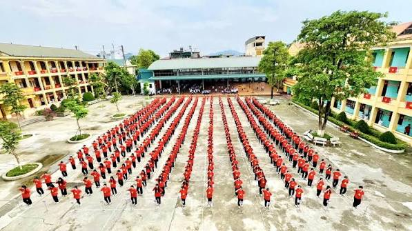
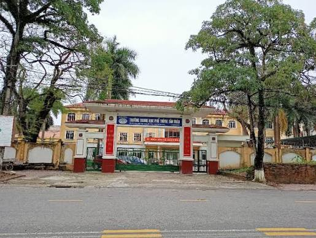
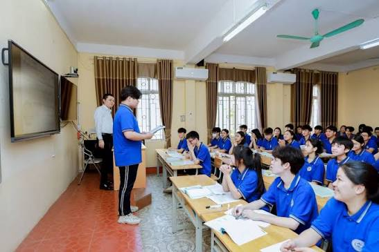

Thông tin trường
Tên trường: THPT Tân Trào
Địa chỉ: Tân Trào, Nghi Xuân, Hà Tĩnh
Niên khóa: 2021 – 2023
Lớp của mình: 12A1
Kỷ niệm đáng nhớ
- Những ngày đầu vào lớp, mình vừa học vừa làm quen với môi trường mới.
- Mình nhớ những buổi học cùng bạn bè, từ những giờ lên lớp đến những buổi đi chơi sau giờ học.
- Trường có nhiều hoạt động ý nghĩa, giúp mình trưởng thành hơn mỗi ngày.
Hình ảnh


